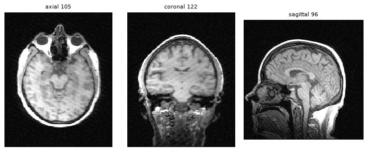
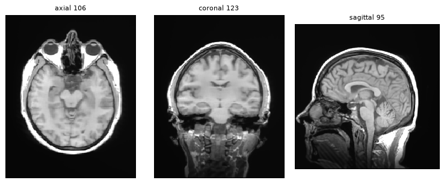
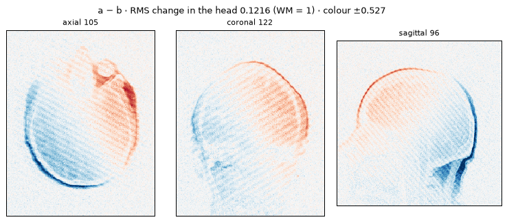

returned v3 · 22 calls in 7 turns · 0 refused · 40.8 s · $0.0216



3-D T1-weighted brain MRI, 1 mm voxels. Reviewed v0 and v3 in three planes and air windows; measured all five artifacts on v0 and v3, with interval measurements on v1. Compared v3 with v0.
| artifact | answer | finding |
|---|---|---|
| noise | yes | Present: v0 tissue noise σ 0.0419 of white matter, above the 0.030 threshold. |
| spike | yes | Present: one k-space spike, z 16.3, producing approximately 5.6 mm stripes; estimated head RMS 0.0225 of white matter. |
| ghosting | no | Absent: no A–P line-energy rhythm or air copy detected on v0 or after repairs. |
| bias | yes | Present: marked smooth shading, brightest posteriorly and darkest on the left; estimated max/min − 1 of 0.891 on v0. |
| motion | no | Uncertain: v0 motion reading 0.0048 with no significant A–P air leak, but confidence was low because of noise. After repairs, v3 reading was 0.000 with no significant A–P leak. |
v1: removed the detected spike stripe; a small residual at the same frequency was predominantly in air. v2: DRUNet denoising, σ 0.0398 to 0.0144. v3: N4 bias correction, immediate N4 reading 0.539 to 0.007. Final measurements: σ 0.0155, spike z 6.7, and bias estimate 0.0187. No ghosting repair was applied; all three repairs were retained. Overall v3 versus v0 head RMS change was 0.1216 of white matter.
Noise, spike stripes and shading were substantially reduced. No ghosting or definite motion was detected, though motion cannot be excluded.
Return v3 for clinical review alongside the original. No motion-based rescan is indicated by the available measurement; rescan if diagnostic review finds image quality inadequate.
Rescan: no · Post-repair motion estimate 0.000 is below the 0.033 rescan level, with no significant A–P leak; under-reading remains possible.
No clean reference is available. Motion estimates can under-read in the presence of other artifacts, and denoising may alter fine detail; a low final motion reading does not exclude motion or guarantee diagnostic usability.
repairs it lists: fix_spike, fix_noise, fix_bias
| call | function | on | made | reading | note |
|---|---|---|---|---|---|
| 1 | noise_tool | v0 | – | yes 0.041859 | σ 4.19 % of WM, 1.19 points above the 3.0 % line |
| 2 | spike_tool | v0 | – | yes 0.022537 | 1 bright k-space point, z 16.3 (line 7.0): stripes 6 mm apart |
| 3 | ghosting_tool | v0 | – | no 0.000445 | no repeat in the A–P line energy (peak 10, line 150) and no copy in the air (0.0003, line 0.0056) |
| 4 | bias_tool | v0 | – | yes 0.890926 | smooth shading over the brain, about 0.89 max/min − 1 (N4 reads 0.530, line 0.083): brightest at the back, darkest at the left |
| 5 | motion_tool | v0 | – | no 0.004761 | no leak of head signal into the air along A–P (0.0011, line 0.0038); the air is noisy (σ 4.2 % of WM), which can hide a weak leak |
| 6 | look | v0 | – | – | axial 105, coronal 122, sagittal 96 |
| 7 | fix_spike | v0 | v1 | – | 1 stripe removed (6 mm apart), 1 round; far air noisy; spike tool after: best z 10.0 (line 7.0) |
| 8 | motion_tool | v1 | – | no 0.004383 | no leak of head signal into the air along A–P (0.0010, line 0.0038); the air is noisy (σ 4.0 % of WM), which can hide a weak leak |
| 9 | spike_tool | v1 | – | yes 0.000417 | bright k-space point z 10.0 (line 7.0), but its stripe sits in the air |
| 10 | ghosting_tool | v1 | – | no 0.0 | no repeat in the A–P line energy (peak 6, line 150) and no copy in the air (0.0002, line 0.0056) |
| 11 | noise_tool | v1 | – | yes 0.039812 | σ 3.98 % of WM, 0.98 points above the 3.0 % line |
| 12 | fix_noise | v1 | v2 | – | denoised with σ 3.98 % (DRUNet, three directions); noise tool after: 1.44 % |
| 13 | fix_bias | v2 | v3 | – | smooth shading divided out: N4 reading 0.539 → 0.007 |
| 14 | motion_tool | v3 | – | no 0.0 | no leak of head signal into the air along A–P (-0.0006, line 0.0038) |
| 15 | ghosting_tool | v3 | – | no 0.0 | no repeat in the A–P line energy (peak 8, line 150) and no copy in the air (0.0009, line 0.0056) |
| 16 | spike_tool | v3 | – | no 0.0 | no bright k-space point: best z 6.7 (line 7.0) |
| 17 | noise_tool | v3 | – | no 0.015476 | σ 1.55 % of WM, 1.45 points below the 3.0 % line |
| 18 | bias_tool | v3 | – | no 0.018682 | no shading beyond what a clean brain has: N4 reads 0.011 (line 0.083) |
| 19 | look | v3 | – | – | axial 106, coronal 123, sagittal 95 |
| 20 | look | v3 | – | – | axial 106, coronal 123, sagittal 95 |
| 21 | compare | v3 − v0 | – | RMS change 0.1216 | – |
| 22 | finish | – | – | – | – |
history of the returned version: v0 → v1 → v2 → v3
✓ repairs it lists = the returned version's history (lists ['fix_spike', 'fix_noise', 'fix_bias'], history ['fix_spike', 'fix_noise', 'fix_bias']; not named in the text: none)
✓ every number it quotes is in what it was given (18 quoted; not found: none)
✓ its yes/no answers match its findings (contradict: none; uncertain: motion; no lead word: none)